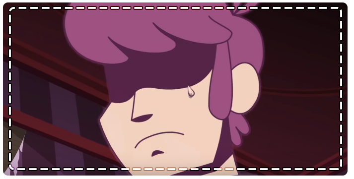

"미스터리 스컬즈"라는 이름의 그룹의 멤버 아서, 비비, 미스테리는
전국에서 일어나는 모든 미스터리들을 자신들의 벤을 타고다니며 해결하고 다닌다.
어느 날 타고다니던 벤이 갑자기 멈추게 되어 무서워 보이는 멘션 앞에 멈추게 되고,
그 멘션 안에서 정체불명의 해골을 만나게 되면서 도망치다가 우연히 자신들의 과거를 보게 되는데....
※이 이후에는 스포일러가 있을 수 있습니다.
작품을 감상하지 않으셨다면 작품을 보고 오시거나, 스포일러를 감안해주시길 바랍니다※
과거의 회상으로 돌아가는 액자식 구성 안에서
"미스터리 스컬즈"는 루이스, 아서, 비비, 미스테리로 총 5명이었다.
아서는 초록색 존재에게 빙의를 당한 상태에서 4명과 함께 미스터리 해결을 위한 여행을 다니던 중이었다.
아서는 겁이 많은 성격으로 묘사되었고 미스터리 해결을 싫어하였으며,
비비와 루이스가 커플인 것이 너무나도 질투가 나는 것으로 묘사가 된다.
자신이 숨기고 있던 친구들에 대한 마음이 결국엔
어떠한 존재에 빙의당하면서 루이스를 살인하게 되면서 과거 회상이 마무리된다.
해골이 유일하게 해를 가하지 않은 사람은 바로 비비였는데,
비비에게 무언가를 전해주려고 한 순간, 아서는 위협을 느껴 저택 밖으로 비비를 이끌고 간다.

사실 맨션에 있었던 해골의 존재는 바로 미스터리 스컬즈의 전 멤버인 루이스 였던 것이다.
결국 비비에게 자신의 마음을 전달하지 못한 채로 도입부의 스토리가 끝나게 된다.
멘션에서 만난 해골이 자신이 죽인 친구 루이스였다는 사실이 밝혀지지만,
끝내 현 미스터리 스컬즈 멤버는 아무도 알지 못한 채 도입부인 고스트 애니메이션 시리즈가 끝이 난다.
아서가 루이스의 존재에 대한 사실을 깨닫는 시즌은 Hellbent시리즈로, 비비는 아직 눈치채지 못한 듯 하다.
시리즈의 진행에 따라 작중 묘사가 드러나는데,
사실은 아서가 루이스를 사랑하는 게 아니었냐는 팬들의 추측이 나오기도 한다.